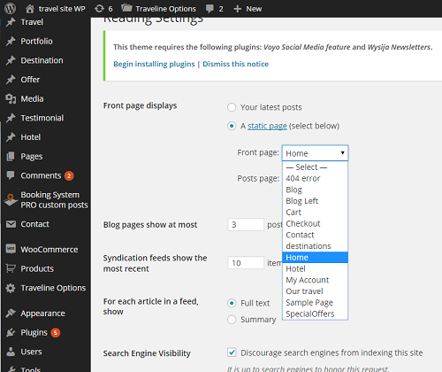

Traveline
Documentation
By ThemeBasket Wordpress Team -
ThemeBasket
Home Page
Back to Menu
Setting Homepage
Go to
Settings >> Reading
Select
A Static Page
and choose your Front Page from
Droupdown Menu
selection and press save change button.
Like Bellow Image
